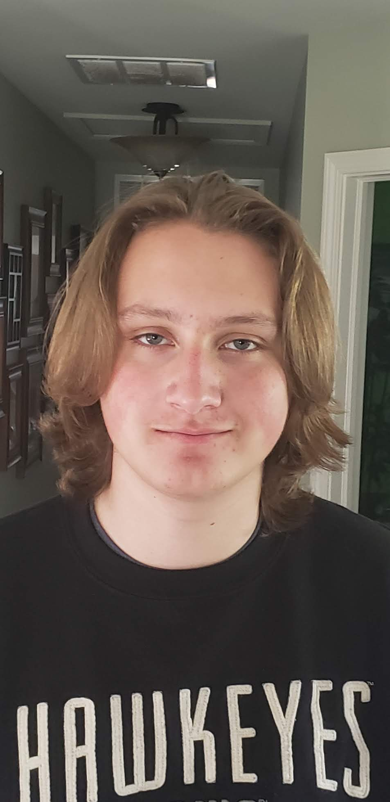
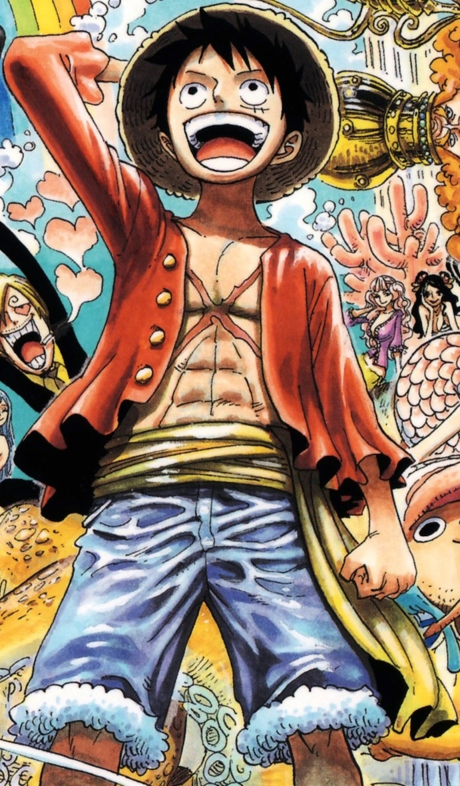

About Me

Hello I am Ian Kuk, last name pronounced Cook, and I am a senior at the University of Iowa studing
Computer Science and Engineering, and obtaining a minor in business. I am orignally from Oswego Illinois.
In my free time I like to play video games and watch anime.
Hobbies

One of my favorite things to do is play a video game that most people would consider tedious or "Grindy".
I like sitting down and getting lost in the repetative task of the game. I keep myself entertained by watching
a movie or tv show while I do it. I also love the hit series One Piece. I decided to watch the 1000+ epiosde anime
during covid and I have been obsessed since. Not only have I watch every episode, but when I finished I decided to
read all of it as well. I also enjoy other popular mangas such as beserk or HunterxHunter.
Experience
I have had the opportunity to work with three different companies to gain experience. I graduated highschool early,
so in order to fill the time I did IT management for a company called CERX Solutions. During my sophmore year of college
I had the priveledge of working for BAE Systems as a quality engineer. While working there I createda python script to
track pin failures of a Ball Grid Array. This script ended up getting the project upgraded from a greenbelt to a master
black belt project inside their six sigma system. This most recent summer I moved to Winston-Salem North Carolina
to do a systems engineering internship. While there I worked on the actuation system for their first class seats. My work
their has granted me the opportunity to come back this upcoming summer to do a Software Engineering internship for them.